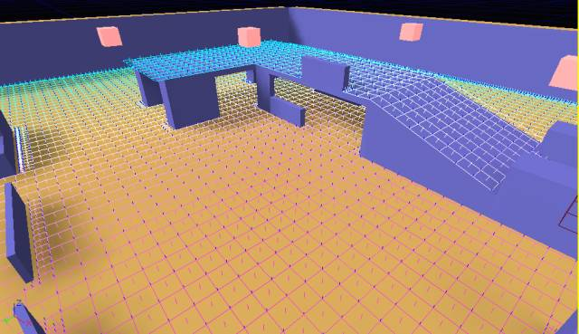
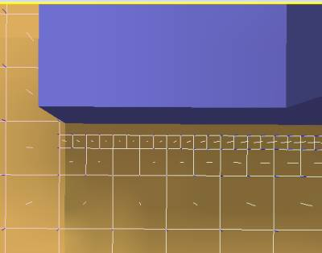
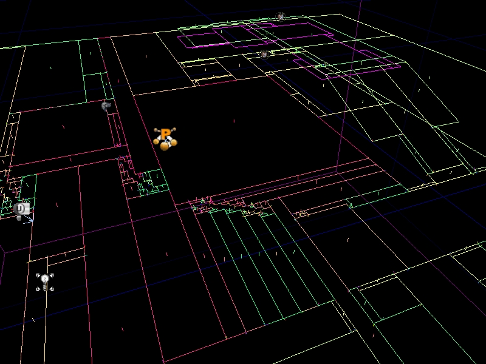
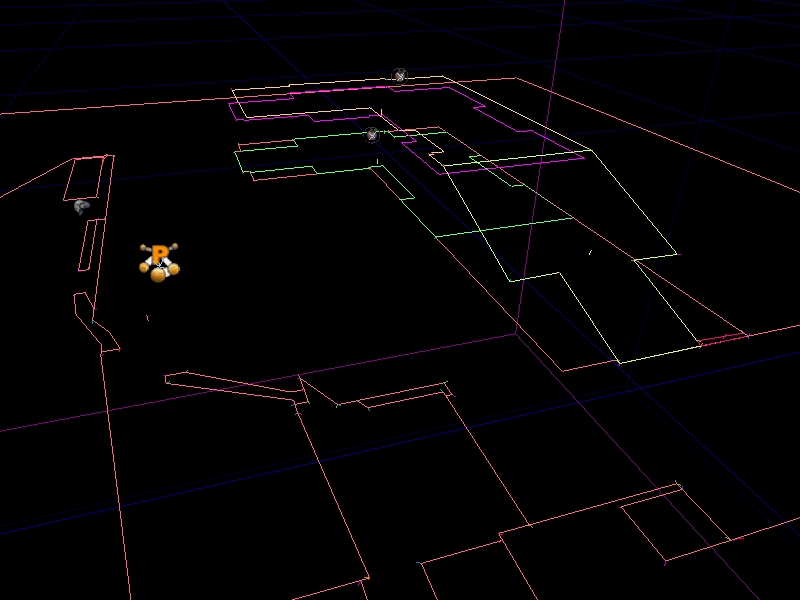
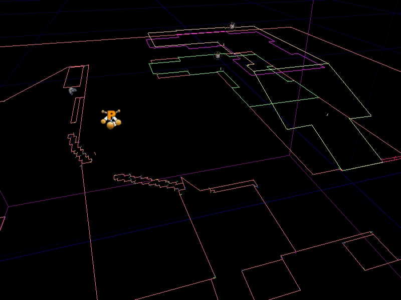
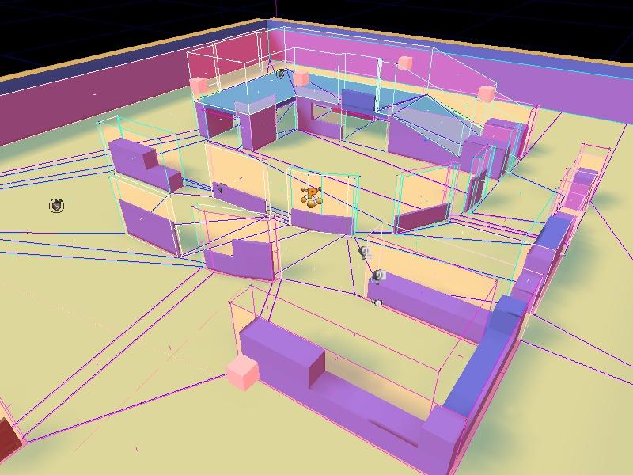

UDN
Search public documentation:
NavigationMeshReference
日本語訳
中国翻译
한국어
Interested in the Unreal Engine?
Visit the Unreal Technology site.
Looking for jobs and company info?
Check out the Epic games site.
Questions about support via UDN?
Contact the UDN Staff
中国翻译
한국어
Interested in the Unreal Engine?
Visit the Unreal Technology site.
Looking for jobs and company info?
Check out the Epic games site.
Questions about support via UDN?
Contact the UDN Staff
UE3 Home > AI & Navigation > Navigation Mesh Reference
Navigation Mesh Reference
Overview
Obstacle Mesh
Generation Process
1. Exploration
Starting with each position placed by a designer, the map is 'flood filled'. That is, according to some step size, each segment of the map is examined via raycasts and once verified, added to the mesh. At the end of this stage we end up with a high density mesh that resembles a grid. We are working with squares here due to the AABB nature of Unreal's line-checks. (Fig. C depicts the mesh after the first stage of mesh generation)  One disadvantage of this approach is that objects which are slightly out of phase with the step size being used for exploration can end up being far away from the boundary of the mesh. To alleviate this, during exploration when an obstacle is hit, the step size will be subdivided N times to achieve the desired level of accuracy. (Fig. D depicts a section of the test map which benefits from subdivision) 2. Mesh Simplification
The trickiest (and most time consuming step) is that of simplifying the mesh to something more reasonable to fit in memory and run pathfinding on. Currently our simplification is primarily accomplished via a slab merge approach, and then convex decomposition of said slabs into a minimal amount of convex shapes. The whole process takes form of the following steps:- Square merge to reduce number of polys and speed up the following steps
- Merge all polys into concave slabs separated only by differences in slope
- Decompose concave slabs into convex shapes
Square merge
Square merge simply picks a starting node, and expands it in all directions trying to find the most optimal (biggest area) configuration of that starting square. This process is fast and reduces the number of nodes by a large factor, speeding up the rest of the process. Here is a screenshot of the test map after square merge is completed:  See UNavigationMeshBase::MergeSquares()Concave Slab Merge
This step merges adjacent polys (whether the result is convex or not) as much as possible. Polys that are too dissimiler in slope, or whose merge would pull the resulting shape too far off the original polys will not be merged. Here is what the mesh looks like after this step has been performed:  Note: this step incorporates edge simplification which smoothes out stair-step shapes caused by the grid nature of the original expansion process. To illustrate, here is a shot of the mesh without this edge simplification turned on:  See UNavigationMeshBase::MergePolysConcave()Slab decomposition
Once the mesh has been simplified into slabs of similar slope and height, we need to break them down into usable shapes. This is done via a convex decomposition process, that uses an A* approach to find the optimal configuration of shapes to represent the concave slab. See UNavigationMeshBase::DecomposePolyToConvexPrimitives()3. Mesh Finalization
Now that the mesh has been simplified, the final step is building path-able edges between nodes, and generating the obstacle mesh. Also during this step we cull unused vertices and massage the data for serialization. (Fig. I depicts the mesh after all steps are complete, note the vertical surfaces which depict the obstacle mesh) Benefits of a Navigation Mesh over pathnodes:
Reduction in node density
Since with a mesh we can represent a large area with a single polygon, overall graph density goes down. This is a win for many reasons:- Memory footprint is reduced with the decrease in nodes being stored.
- Pathfinding times go down as the density of the graph being searched shrinks.
- Less nodes means less time fixing up cross-level pathing information
More optimal data structures
Currently path data is stored via UReachSpecs, and ANavigationPoints in the level. This results in bloat of memory footprint both because of overhead from parent classes (AActor especially) and due to the distributed nature of the data. With a mesh our data is stored in one big buffer which lends itself more easily to compression, and other optimizations. No significant effort has been made to optimize our data, but already we are seeing 20% gains over pathnodes in MP_Gridlock.Obviation of FindAnchor
Currently whenever starting a pathsearch an AI first needs to determine which pathnode it should start pathing from. This is accomplished via an octree check to return the pathnodes in range, and then doing raycasts from the AI to the pathnodes in order to find the closest, reachable path node. The same must be done for the path destination if the destination is not on the graph already. Some of this can (and is) mitigated via caching, etc.. but the fact remains that a non trivial amount of raycasts must be done by pathing AIs periodically at run time. Using a navigation mesh the ambiguity which FindAnchor resolves does not exist. We simply find the polygon the AI is currently inside, and that is our start location. The same is true for our destination.Better pathing behavior
Demonstrated earlier (in Fig. A) there are several situations where movement from waypoint graphs can be un-natural looking. The closest pathnode to the AI may be behind him, or in the opposite direction that he's going. The same problem remains for the goal.No more raycasts
Using the data we generate into the navigation mesh, a significant portion of the raycasts AI do can be eliminated. One example is when an AI first tries to move, an initial raycast is performed in order to determine if the AI can go directly to its destination and avoid pathfinding on the network. This is no longer needed for two reasons. First, in most cases if a point can be directly reached it will be in the same polygon as the AI, so it's a simple matter of finding the polygon for start and goal and detecing they are the same. Second, we can fall back on the obstacle mesh to do a low-fi linecheck to determine direct reachability. Both options are much cheaper than a raycast. There are several other instances in the gears codebase where an AI asks if it can go directly to a point, all of which no longer need to do a raycast. Another potential avenue for optimization is having AI move on the mesh itself (rather than running via PHYS_Walking). The mesh is a fair representation of the configuration space the AI can walk on, so it would be fairly trivial to project onto the mesh and do a single raycast to correct the AI onto the visible geo rather than the N raycasts per frame PHYS_Walking does. This would be especially useful for crowds. Since they probably don't need all the fidelity a normal AI does, we could potentially handle many more crowd actors at a time by snapping them to the navigation mesh rather than doing collision checks against world geometry. Indeed we should be able to increase the number of AI on screen in general.Strictly better representation of the world
A continuous representation of walkable space is beneficial to for many other types of space queries an AI might do. Some examples:- The process of determining a position to remain in squad formation is vastly improved because one can actually check to see if the desired formation position is in the mesh and thus walk-able or not. Prior methods relied on finding the closest path node to the formation position, which is expensive to find. Furthermore the closest path node to the position isn't necessarily very near the formation position, and often looks bad.
- AI are able to mantle over a wall at any point along the wall rather than having to go to a discrete pathnode which represents a 'mantle-able' location
- Trivial adaptation of the mesh as an accurate influence map. Propagating across a hand-authored waypoint-graph is only marginally accurate due to the incomplete covering of the worldspace, and is reliant on human-placed nodes whereas our mesh is precise, and complete.